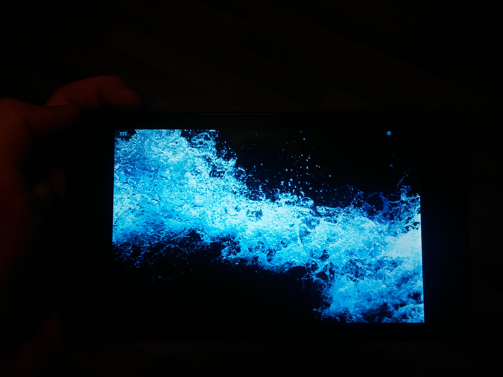

Google Nexus 7 2013 (asus-flo)
Jump to navigation
Jump to search
|
 Flo running Hildon | |
| Manufacturer | Google (ASUS) |
|---|---|
| Name | Nexus 7 (2013) WIFI |
| Codename | asus-flo |
| Released | 2013 |
| Category | testing |
| Hardware | |
| Chipset | Qualcomm Snapdragon S4 Pro (Snapdragon 600) (APQ8064-1AA) |
| CPU | Quad-core 1.5 GHz Krait 300 |
| GPU | Adreno 320 |
| Display | 1200x1920 FHD IPS |
| Storage | 16/32 GB |
| Memory | 2 GB |
| Architecture | armv7 |
| USB Networking |
Works
|
|---|---|
| Flashing |
Works
|
| Touchscreen |
Works
|
| Display |
Works
|
| WiFi |
Works
|
| FDE |
Partial
|
| Mainline |
Partial
|
| Battery | |
| 3D Acceleration |
Works
|
| Audio | |
| Bluetooth | |
| Camera | |
| GPS | |
| Mobile data |
Unavailable
|
| SMS |
Unavailable
|
| Calls |
Unavailable
|
| USB OTG | |
| NFC | |
| Accelerometer | |
|---|---|
| Magnetometer | |
| Ambient Light | |
| Proximity | |
| Hall Effect | |
| Barometer | |
| Power Sensor | |
| Camera Flash | |
|---|---|
| Keyboard | |
| Touchpad | |
| USB-A | |
| HDMI/DP | |
| Ir TX | |
| Ir RX | |
| Stylus | |
| Haptics | |
| Ethernet | |
| FOSS bootloader | |
|
This device is based on the Snapdragon 600. See the SoC page for common tips, guides and troubleshooting steps |

{kind=link}
Contributors
- David Heidelberg (okias) -> trying to work on maintaining latest LTS kernel...
- montvid porting (not active)
- John Stultz Flo kernel patches maintainer (not active)
- Rob Clark Freedreno video driver maintainer (not active)
Users owning this device
- Audunmg
- Blacklight
- Clamor (Notes: Running Unlegacy Android Project Oreo ROM)
- Dragon788 (Notes: is the above system, the info is just spread across both places and it will be nice to find the right page from my profile)
- Hexaheximal (Notes: ~~Currently runs LineageOS, planning on installing postmarketOS on it~~ I can't get the micro USB port to work. *sigh*)
- ImAdam
- Lantizia
- Manty (Notes: Android development)
- Neilvandyke
- Newbyte (Notes: Seems to have failing eMMC. Running Ubuntu Touch. Borrowed by girlfriend, so unavailable for testing things)
- Okias (Notes: Damaged screen, but works)
- Otto
Key combinations
- Boot to bootloader: Power + Volume Down
- Boot to recovery: Power + Volume Up
- Shutdown: Power
Hardware revisions
First figure out, which HW revision do you have. You can do that from booted TWRP or original AOSP kernel by running
dmesg | grep "HW Revision"
Alternatively from bootloader (fastboot), run
fastboot getvar version-hardware
Known hardware revisions are:
* rev_e * ??
Note: at present, the hardware revision does not seem to be of any consequence.
Flashing
How to enter flash mode
- Connect a USB cable
- Power the device off
- Hold Power + Volume Down
-
fastbootshould work when the green android appears on the screen
Installation process
Is currently identical to Google_Nexus_7_2012_(asus-grouper)#Installation_process, just beware, that DATA partition numbers can differ!
Mainline status
- 4.11 kernel with many workarounds works
- 4.12-rc1 broke Adreno, not fixed at least until kernel 5.6 https://github.com/freedreno-zz/freedreno/issues/12
- 4.14 kernel running, but when 3D or Xserver is used, it tends to stop working.
- 5.4 - working
- 5.10 (LTS) - currently being worked on, sometimes laggy touchscreen
- 5.11 - 5.12 needs power button shortly pressed in initial booting process
- mainline and -next should be working with correct configuration
Issues (WIP)
- WIFI firmware sometimes does not load on boot. WIFI connection is very slow - probably to the wcn36xx driver still being a work in progress. You need to start WiFi#Start_WIFI_manually as the firmware loads late in the boot process.
sudo wpa_supplicant -u -Dnl80211 -B -c/etc/wpa_supplicant/wpa_supplicant.conf -iwlan0 sudo nmcli device wifi connect "ssd" password "pass" ifname wlan0
Other information
- Flash the system to a userdata partition to have 10GB free space. If you don't see 10GB install TWRP recovery and format system/all partitions and start again:
./pmbootstrap.py flasher flash_rootfs --partition userdata ./pmbootstrap.py flasher flash_kernel
- When I tried flashing rootfs, it would fail almost immediately after erasing. I installed TWRP, and tried a few things to "wipe" it, which worked, and then permitted the good flash (with hildon UI) below. (Note that, although the instructions for TWRP 3.2.2-0 for asus-flo suggest that you might need to do "fastboot reboot" and then hold down the buttons, that only resulted in what appeared to be boot loops of TWRP -- what worked instead was to use the buttons to power off, and then use the buttons to boot recovery.)
(native) flash rootfs image target didn't report max-download-size erasing 'userdata'... OKAY [ 0.977s] sending 'userdata' (395264 KB)... OKAY [395.414s] writing 'userdata'... OKAY [ 19.449s] finished. total time: 415.840s
- When I tried flashing with the Hildon UI (on 2018-07-27), it booted to the blue Hildon wallpaper, but the wallpaper only filled a square subset of the display.
- For unknown reasons, I'm seeing rootfs flash times that seem slow. For example, a flash of plasma-mobile ui (808 MB) took 850.323s, with 808.169s of that in sending phase. This is approx. 10 times the duration for flashing sony-amami from the same laptop.
- I would recommend installing and using MATE as it is very complete
- To run Internet via USB see USB Internet
- Correct battery charge info appears to be in: /sys/bus/i2c/drivers/bq27xxx-battery/0-0055/power_supply/bq27541-0/charge_now
- It's possible that Nexus 7 2013 units have flash hardware problems: AndroidPolice.com 2015-04-19, appleinsider.com 2013-06-18